Evaluacion de Modelos de Machine Learning#
En este notebook realizamos la evaluacion completa de 10 modelos de clasificacion entrenados con datos preprocesados de pacientes diabeticos.
Objetivo#
Evaluar el desempeno de los siguientes modelos:
K-Nearest Neighbors (KNN)
Naive Bayes
Regresion Logistica con L1 (Lasso)
Regresion Logistica con L2 (Ridge)
Ridge Classifier
Lasso (LogReg L1-Saga optimizado)
Arbol de Decision
Random Forest
XGBoost
SVM Lineal
Metricas de Evaluacion#
Para cada modelo presentamos:
Matriz de Confusion: Visualizacion de TP, TN, FP, FN
Curva ROC y AUC: Capacidad de discriminacion del modelo
Tabla de Metricas: Accuracy, Precision, Recall, F1-score, AUC
Justificacion de Metrica Principal: Seleccion de la metrica mas relevante para el problema
Datos#
Utilizamos los datos preprocesados de ../data/processed/:
Ya escalados con StandardScaler
Ya codificados (One-Hot Encoding)
Train balanceado con SMOTE
Sin valores faltantes
# =========================================
# 1. Importar librerias necesarias
# =========================================
import pandas as pd
import numpy as np
import matplotlib.pyplot as plt
import seaborn as sns
import warnings
# Modelos de clasificacion
from sklearn.neighbors import KNeighborsClassifier
from sklearn.naive_bayes import GaussianNB
from sklearn.linear_model import LogisticRegression, RidgeClassifier
from sklearn.tree import DecisionTreeClassifier
from sklearn.ensemble import RandomForestClassifier
from sklearn.svm import LinearSVC
from xgboost import XGBClassifier
# Metricas
from sklearn.metrics import (
accuracy_score, precision_score, recall_score, f1_score,
roc_auc_score, roc_curve, confusion_matrix
)
warnings.filterwarnings('ignore')
# Configuracion de visualizacion
plt.style.use('default')
sns.set_palette("pastel")
print("Librerias importadas correctamente")
Librerias importadas correctamente
# =========================================
# 2. Cargar datos preprocesados
# =========================================
print("Cargando datos procesados de '../data/processed/'...\n")
# Cargar datos de entrenamiento (BALANCEADOS con SMOTE)
X_train = pd.read_csv('../data/processed/X_train.csv')
y_train = pd.read_csv('../data/processed/y_train.csv').values.ravel()
# Cargar datos de validacion (SIN balancear)
X_val = pd.read_csv('../data/processed/X_val.csv')
y_val = pd.read_csv('../data/processed/y_val.csv').values.ravel()
# Cargar datos de test (SIN balancear)
X_test = pd.read_csv('../data/processed/X_test.csv')
y_test = pd.read_csv('../data/processed/y_test.csv').values.ravel()
print("Datos cargados exitosamente\n")
# Informacion de los datos
print("="*60)
print(" "*15 + "INFORMACION DE LOS DATOS")
print("="*60)
print(f"\nDimensiones:")
print(f" Train: {X_train.shape[0]:>7,} muestras × {X_train.shape[1]:>3} features")
print(f" Validation: {X_val.shape[0]:>7,} muestras × {X_val.shape[1]:>3} features")
print(f" Test: {X_test.shape[0]:>7,} muestras × {X_test.shape[1]:>3} features")
print(f"\nBalance de clases (Test - datos reales):")
test_counts = pd.Series(y_test).value_counts()
print(f" Clase 0: {test_counts[0]:>7,} ({test_counts[0]/len(y_test)*100:>5.1f}%)")
print(f" Clase 1: {test_counts[1]:>7,} ({test_counts[1]/len(y_test)*100:>5.1f}%)")
print("\n" + "="*60)
# Convertir a arrays de NumPy
X_train_array = X_train.values
X_test_array = X_test.values
Cargando datos procesados de 'data/processed/'...
Datos cargados exitosamente
============================================================
INFORMACION DE LOS DATOS
============================================================
Dimensiones:
Train: 71,236 muestras × 113 features
Validation: 15,265 muestras × 113 features
Test: 15,265 muestras × 113 features
Balance de clases (Test - datos reales):
Clase 0: 8,230 ( 53.9%)
Clase 1: 7,035 ( 46.1%)
============================================================
Datos cargados exitosamente
============================================================
INFORMACION DE LOS DATOS
============================================================
Dimensiones:
Train: 71,236 muestras × 113 features
Validation: 15,265 muestras × 113 features
Test: 15,265 muestras × 113 features
Balance de clases (Test - datos reales):
Clase 0: 8,230 ( 53.9%)
Clase 1: 7,035 ( 46.1%)
============================================================
# =========================================
# 3. Funcion de evaluacion completa
# =========================================
# Lista para almacenar resultados
resultados_evaluacion = []
def evaluar_modelo_completo(nombre, modelo, X_train, y_train, X_test, y_test):
"""
Evaluamos un modelo con metricas completas y visualizaciones.
Args:
nombre: Nombre del modelo
modelo: Instancia del modelo (sin entrenar)
X_train, y_train: Datos de entrenamiento
X_test, y_test: Datos de test
Retorna:
Diccionario con todas las metricas calculadas
"""
print(f"\n{'='*80}")
print(f"EVALUANDO: {nombre}")
print(f"{'='*80}")
# 1. ENTRENAMIENTO
print(f"\nEntrenando modelo...")
modelo.fit(X_train, y_train)
print(f"Modelo entrenado correctamente")
# 2. PREDICCIONES
y_pred = modelo.predict(X_test)
# Obtener probabilidades o scores para ROC
if hasattr(modelo, 'predict_proba'):
y_pred_proba = modelo.predict_proba(X_test)[:, 1]
elif hasattr(modelo, 'decision_function'):
y_pred_proba = modelo.decision_function(X_test)
else:
y_pred_proba = y_pred
# 3. CALCULAR METRICAS
accuracy = accuracy_score(y_test, y_pred)
precision = precision_score(y_test, y_pred, zero_division=0)
recall = recall_score(y_test, y_pred, zero_division=0)
f1 = f1_score(y_test, y_pred, zero_division=0)
try:
auc = roc_auc_score(y_test, y_pred_proba)
except:
auc = np.nan
print(f"\nMetricas calculadas:")
print(f" Accuracy: {accuracy:.4f}")
print(f" Precision: {precision:.4f}")
print(f" Recall: {recall:.4f}")
print(f" F1-score: {f1:.4f}")
if not np.isnan(auc):
print(f" AUC: {auc:.4f}")
else:
print(f" AUC: N/A")
# 4. MATRIZ DE CONFUSION
cm = confusion_matrix(y_test, y_pred)
tn, fp, fn, tp = cm.ravel()
print(f"\nMatriz de Confusion:")
print(f" TN={tn:>4} FP={fp:>4}")
print(f" FN={fn:>4} TP={tp:>4}")
# Visualizar Matriz de Confusion
plt.figure(figsize=(6, 4))
sns.heatmap(cm, annot=True, fmt='d', cmap='Blues', cbar=False,
xticklabels=['No Readmitido', 'Readmitido'],
yticklabels=['No Readmitido', 'Readmitido'])
plt.title(f'Matriz de Confusion: {nombre}', fontsize=13, fontweight='bold')
plt.ylabel('Valores Reales')
plt.xlabel('Predicciones')
plt.tight_layout()
plt.show()
# 5. CURVA ROC
if not np.isnan(auc):
fpr, tpr, thresholds = roc_curve(y_test, y_pred_proba)
plt.figure(figsize=(7, 5))
plt.plot(fpr, tpr, linewidth=2, label=f'{nombre} (AUC = {auc:.4f})')
plt.plot([0, 1], [0, 1], 'r--', linewidth=1, label='Clasificador Aleatorio')
plt.xlim([0.0, 1.0])
plt.ylim([0.0, 1.05])
plt.xlabel('Tasa de Falsos Positivos (FPR)', fontsize=11)
plt.ylabel('Tasa de Verdaderos Positivos (TPR)', fontsize=11)
plt.title(f'Curva ROC: {nombre}', fontsize=13, fontweight='bold')
plt.legend(loc="lower right")
plt.grid(alpha=0.3)
plt.tight_layout()
plt.show()
# 6. INTERPRETACION
print(f"\nInterpretacion:")
# Analisis de Precision y Recall
if precision > 0.7 and recall > 0.7:
print(f" - El modelo muestra buen equilibrio entre precision y recall")
elif precision > recall + 0.1:
print(f" - El modelo es conservador: prioriza precision sobre recall")
print(f" - Predice readmision solo cuando tiene alta confianza")
elif recall > precision + 0.1:
print(f" - El modelo es sensible: prioriza recall sobre precision")
print(f" - Detecta mas casos de readmision pero con mas falsos positivos")
else:
print(f" - El modelo muestra desempeno moderado en ambas metricas")
# Analisis de F1-score
if f1 > 0.7:
print(f" - F1-score alto ({f1:.4f}) indica buen balance predictivo")
elif f1 > 0.5:
print(f" - F1-score moderado ({f1:.4f}) sugiere capacidad predictiva aceptable")
else:
print(f" - F1-score bajo ({f1:.4f}) indica limitaciones en la prediccion")
# Analisis de AUC
if not np.isnan(auc):
if auc > 0.8:
print(f" - AUC excelente ({auc:.4f}): alta capacidad de discriminacion")
elif auc > 0.7:
print(f" - AUC bueno ({auc:.4f}): capacidad de discriminacion aceptable")
elif auc > 0.6:
print(f" - AUC moderado ({auc:.4f}): discriminacion limitada")
else:
print(f" - AUC bajo ({auc:.4f}): poca capacidad de discriminacion")
# Guardar resultados
resultado = {
'Modelo': nombre,
'Accuracy': round(accuracy, 4),
'Precision': round(precision, 4),
'Recall': round(recall, 4),
'F1-score': round(f1, 4),
'AUC': round(auc, 4) if not np.isnan(auc) else np.nan,
'TN': int(tn),
'FP': int(fp),
'FN': int(fn),
'TP': int(tp)
}
resultados_evaluacion.append(resultado)
return resultado
print("Funcion de evaluacion definida correctamente")
Funcion de evaluacion definida correctamente
Evaluacion Individual de Modelos#
A continuacion evaluamos cada uno de los 10 modelos con las tecnicas optimizadas identificadas en el notebook de Optimizacion.
4.1. K-Nearest Neighbors (KNN)#
# KNN con Ball Trees (optimizado para alta dimensionalidad)
knn_model = KNeighborsClassifier(n_neighbors=5, algorithm='ball_tree', n_jobs=-1)
evaluar_modelo_completo("KNN", knn_model, X_train_array, y_train, X_test_array, y_test)
================================================================================
EVALUANDO: KNN
================================================================================
Entrenando modelo...
Modelo entrenado correctamente
Modelo entrenado correctamente
Metricas calculadas:
Accuracy: 0.5585
Precision: 0.5237
Recall: 0.4631
F1-score: 0.4916
AUC: 0.5730
Matriz de Confusion:
TN=5267 FP=2963
FN=3777 TP=3258
Metricas calculadas:
Accuracy: 0.5585
Precision: 0.5237
Recall: 0.4631
F1-score: 0.4916
AUC: 0.5730
Matriz de Confusion:
TN=5267 FP=2963
FN=3777 TP=3258
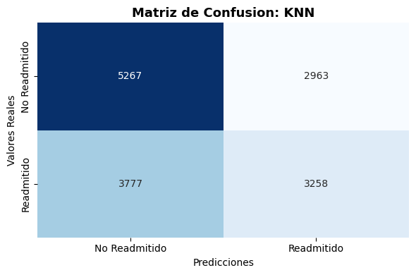
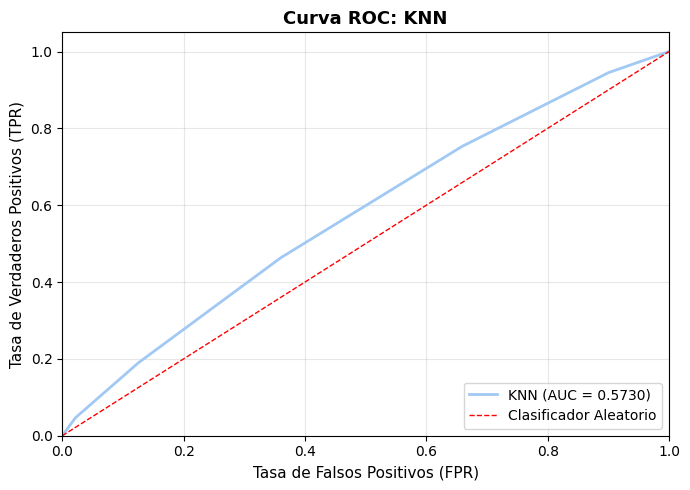
Interpretacion:
- El modelo muestra desempeno moderado en ambas metricas
- F1-score bajo (0.4916) indica limitaciones en la prediccion
- AUC bajo (0.5730): poca capacidad de discriminacion
{'Modelo': 'KNN',
'Accuracy': 0.5585,
'Precision': 0.5237,
'Recall': 0.4631,
'F1-score': 0.4916,
'AUC': np.float64(0.573),
'TN': 5267,
'FP': 2963,
'FN': 3777,
'TP': 3258}
4.2. Naive Bayes#
# Naive Bayes (GaussianNB)
nb_model = GaussianNB()
evaluar_modelo_completo("Naive Bayes", nb_model, X_train_array, y_train, X_test_array, y_test)
================================================================================
EVALUANDO: Naive Bayes
================================================================================
Entrenando modelo...
Modelo entrenado correctamente
Metricas calculadas:
Accuracy: 0.6012
Precision: 0.5906
Recall: 0.4388
F1-score: 0.5035
AUC: 0.6255
Matriz de Confusion:
TN=6090 FP=2140
FN=3948 TP=3087
Modelo entrenado correctamente
Metricas calculadas:
Accuracy: 0.6012
Precision: 0.5906
Recall: 0.4388
F1-score: 0.5035
AUC: 0.6255
Matriz de Confusion:
TN=6090 FP=2140
FN=3948 TP=3087
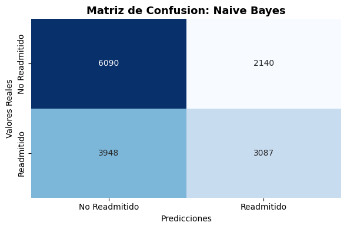
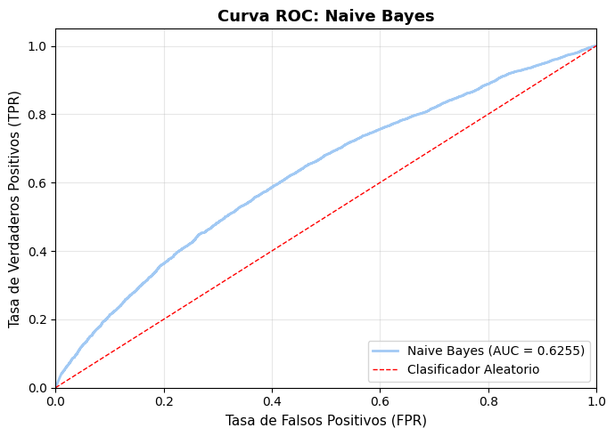
Interpretacion:
- El modelo es conservador: prioriza precision sobre recall
- Predice readmision solo cuando tiene alta confianza
- F1-score moderado (0.5035) sugiere capacidad predictiva aceptable
- AUC moderado (0.6255): discriminacion limitada
{'Modelo': 'Naive Bayes',
'Accuracy': 0.6012,
'Precision': 0.5906,
'Recall': 0.4388,
'F1-score': 0.5035,
'AUC': np.float64(0.6255),
'TN': 6090,
'FP': 2140,
'FN': 3948,
'TP': 3087}
4.3. Ridge Classifier#
# Ridge con solver 'saga' (optimizado)
ridge_model = RidgeClassifier(alpha=1.0, solver='saga', random_state=42)
evaluar_modelo_completo("Ridge", ridge_model, X_train_array, y_train, X_test_array, y_test)
================================================================================
EVALUANDO: Ridge
================================================================================
Entrenando modelo...
Modelo entrenado correctamente
Metricas calculadas:
Accuracy: 0.6271
Precision: 0.6403
Recall: 0.4357
F1-score: 0.5185
AUC: 0.6714
Matriz de Confusion:
TN=6508 FP=1722
FN=3970 TP=3065
Modelo entrenado correctamente
Metricas calculadas:
Accuracy: 0.6271
Precision: 0.6403
Recall: 0.4357
F1-score: 0.5185
AUC: 0.6714
Matriz de Confusion:
TN=6508 FP=1722
FN=3970 TP=3065
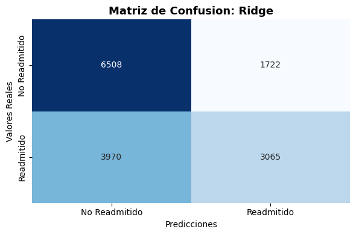
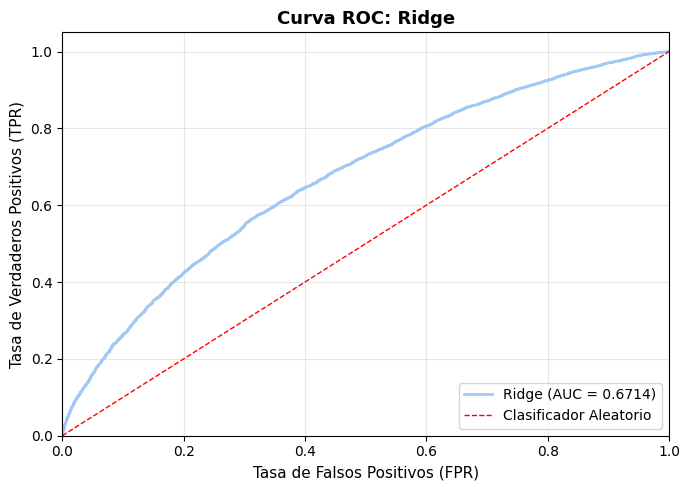
Interpretacion:
- El modelo es conservador: prioriza precision sobre recall
- Predice readmision solo cuando tiene alta confianza
- F1-score moderado (0.5185) sugiere capacidad predictiva aceptable
- AUC moderado (0.6714): discriminacion limitada
{'Modelo': 'Ridge',
'Accuracy': 0.6271,
'Precision': 0.6403,
'Recall': 0.4357,
'F1-score': 0.5185,
'AUC': np.float64(0.6714),
'TN': 6508,
'FP': 1722,
'FN': 3970,
'TP': 3065}
4.4. Lasso (Regresion Logistica L1)#
# Lasso con solver 'saga' (optimizado)
lasso_model = LogisticRegression(penalty='l1', solver='saga', max_iter=1000, n_jobs=-1, random_state=42)
evaluar_modelo_completo("Lasso", lasso_model, X_train_array, y_train, X_test_array, y_test)
================================================================================
EVALUANDO: Lasso
================================================================================
Entrenando modelo...
Modelo entrenado correctamente
Metricas calculadas:
Accuracy: 0.6298
Precision: 0.6432
Recall: 0.4418
F1-score: 0.5238
AUC: 0.6740
Matriz de Confusion:
TN=6506 FP=1724
FN=3927 TP=3108
Modelo entrenado correctamente
Metricas calculadas:
Accuracy: 0.6298
Precision: 0.6432
Recall: 0.4418
F1-score: 0.5238
AUC: 0.6740
Matriz de Confusion:
TN=6506 FP=1724
FN=3927 TP=3108
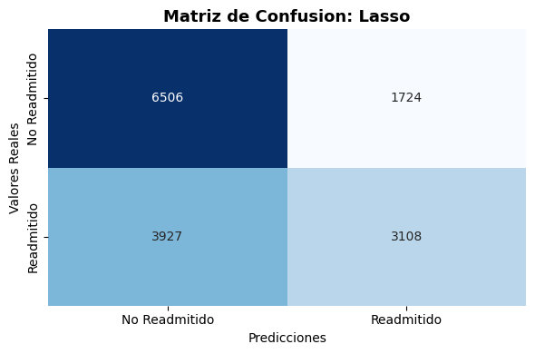
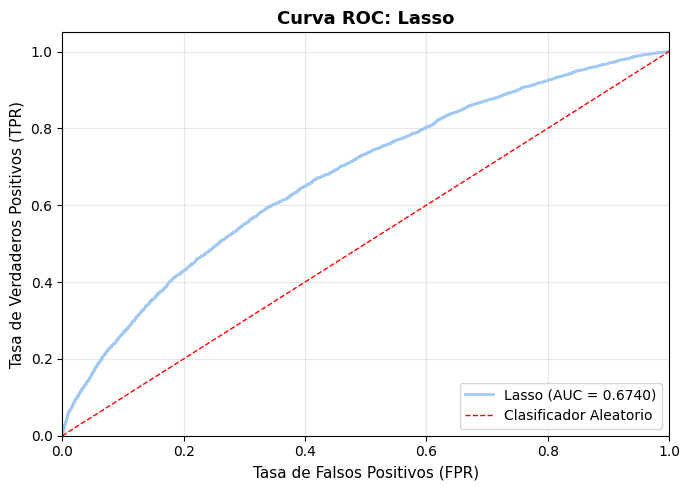
Interpretacion:
- El modelo es conservador: prioriza precision sobre recall
- Predice readmision solo cuando tiene alta confianza
- F1-score moderado (0.5238) sugiere capacidad predictiva aceptable
- AUC moderado (0.6740): discriminacion limitada
{'Modelo': 'Lasso',
'Accuracy': 0.6298,
'Precision': 0.6432,
'Recall': 0.4418,
'F1-score': 0.5238,
'AUC': np.float64(0.674),
'TN': 6506,
'FP': 1724,
'FN': 3927,
'TP': 3108}
4.5. Regresion Logistica L2 (Ridge)#
# Regresion Logistica L2
logreg_l2_model = LogisticRegression(penalty='l2', solver='saga', max_iter=1000, n_jobs=-1, random_state=42)
evaluar_modelo_completo("LogReg L2", logreg_l2_model, X_train_array, y_train, X_test_array, y_test)
================================================================================
EVALUANDO: LogReg L2
================================================================================
Entrenando modelo...
Modelo entrenado correctamente
Metricas calculadas:
Accuracy: 0.6298
Precision: 0.6431
Recall: 0.4421
F1-score: 0.5240
AUC: 0.6740
Matriz de Confusion:
TN=6504 FP=1726
FN=3925 TP=3110
Modelo entrenado correctamente
Metricas calculadas:
Accuracy: 0.6298
Precision: 0.6431
Recall: 0.4421
F1-score: 0.5240
AUC: 0.6740
Matriz de Confusion:
TN=6504 FP=1726
FN=3925 TP=3110
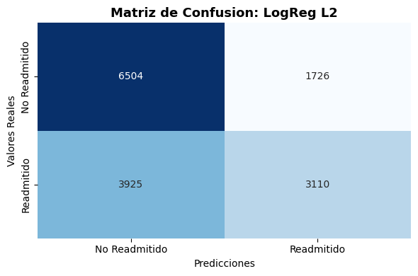
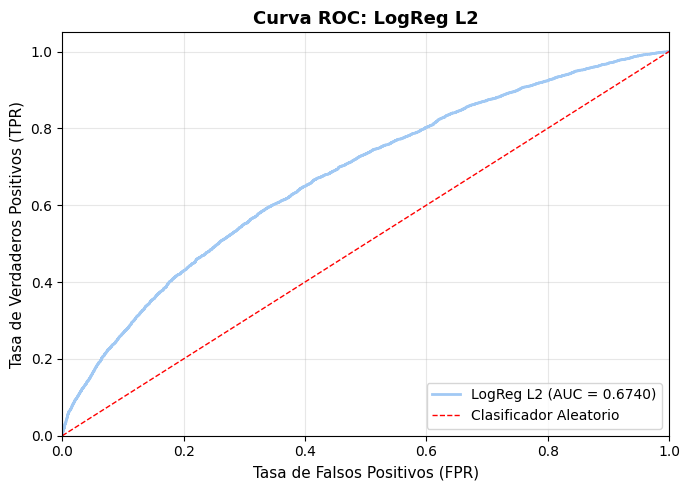
Interpretacion:
- El modelo es conservador: prioriza precision sobre recall
- Predice readmision solo cuando tiene alta confianza
- F1-score moderado (0.5240) sugiere capacidad predictiva aceptable
- AUC moderado (0.6740): discriminacion limitada
{'Modelo': 'LogReg L2',
'Accuracy': 0.6298,
'Precision': 0.6431,
'Recall': 0.4421,
'F1-score': 0.524,
'AUC': np.float64(0.674),
'TN': 6504,
'FP': 1726,
'FN': 3925,
'TP': 3110}
4.6. Regresion Logistica L1 (Lasso alternativo)#
# Regresion Logistica L1 con solver liblinear
logreg_l1_model = LogisticRegression(penalty='l1', solver='liblinear', max_iter=1000, random_state=42)
evaluar_modelo_completo("LogReg L1", logreg_l1_model, X_train_array, y_train, X_test_array, y_test)
================================================================================
EVALUANDO: LogReg L1
================================================================================
Entrenando modelo...
Modelo entrenado correctamente
Metricas calculadas:
Accuracy: 0.6297
Precision: 0.6429
Recall: 0.4422
F1-score: 0.5240
AUC: 0.6740
Matriz de Confusion:
TN=6502 FP=1728
FN=3924 TP=3111
Modelo entrenado correctamente
Metricas calculadas:
Accuracy: 0.6297
Precision: 0.6429
Recall: 0.4422
F1-score: 0.5240
AUC: 0.6740
Matriz de Confusion:
TN=6502 FP=1728
FN=3924 TP=3111
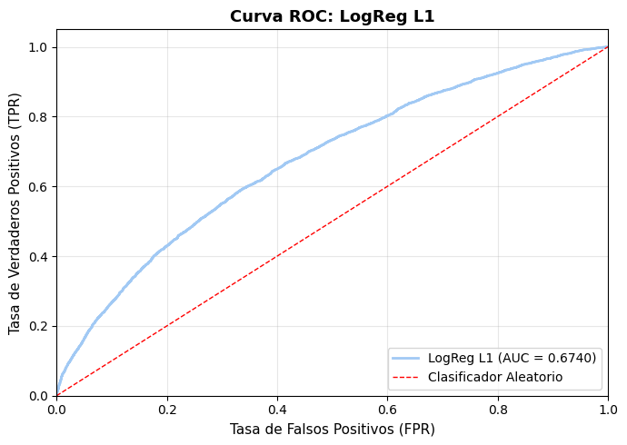
Interpretacion:
- El modelo es conservador: prioriza precision sobre recall
- Predice readmision solo cuando tiene alta confianza
- F1-score moderado (0.5240) sugiere capacidad predictiva aceptable
- AUC moderado (0.6740): discriminacion limitada
{'Modelo': 'LogReg L1',
'Accuracy': 0.6297,
'Precision': 0.6429,
'Recall': 0.4422,
'F1-score': 0.524,
'AUC': np.float64(0.674),
'TN': 6502,
'FP': 1728,
'FN': 3924,
'TP': 3111}
4.7. Arbol de Decision#
# Arbol de Decision
dt_model = DecisionTreeClassifier(max_depth=10, random_state=42)
evaluar_modelo_completo("Arbol Decision", dt_model, X_train_array, y_train, X_test_array, y_test)
================================================================================
EVALUANDO: Arbol Decision
================================================================================
Entrenando modelo...
Modelo entrenado correctamente
Metricas calculadas:
Accuracy: 0.6203
Precision: 0.6204
Recall: 0.4537
F1-score: 0.5241
AUC: 0.6557
Matriz de Confusion:
TN=6277 FP=1953
FN=3843 TP=3192
Modelo entrenado correctamente
Metricas calculadas:
Accuracy: 0.6203
Precision: 0.6204
Recall: 0.4537
F1-score: 0.5241
AUC: 0.6557
Matriz de Confusion:
TN=6277 FP=1953
FN=3843 TP=3192
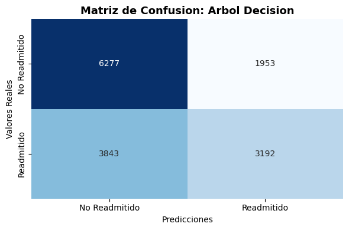
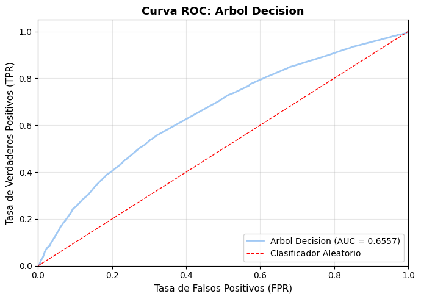
Interpretacion:
- El modelo es conservador: prioriza precision sobre recall
- Predice readmision solo cuando tiene alta confianza
- F1-score moderado (0.5241) sugiere capacidad predictiva aceptable
- AUC moderado (0.6557): discriminacion limitada
{'Modelo': 'Arbol Decision',
'Accuracy': 0.6203,
'Precision': 0.6204,
'Recall': 0.4537,
'F1-score': 0.5241,
'AUC': np.float64(0.6557),
'TN': 6277,
'FP': 1953,
'FN': 3843,
'TP': 3192}
4.8. Random Forest#
# Random Forest
rf_model = RandomForestClassifier(n_estimators=100, random_state=42, n_jobs=-1)
evaluar_modelo_completo("Random Forest", rf_model, X_train_array, y_train, X_test_array, y_test)
================================================================================
EVALUANDO: Random Forest
================================================================================
Entrenando modelo...
Modelo entrenado correctamente
Modelo entrenado correctamente
Metricas calculadas:
Accuracy: 0.6292
Precision: 0.6194
Recall: 0.5066
F1-score: 0.5574
AUC: 0.6720
Matriz de Confusion:
TN=6040 FP=2190
FN=3471 TP=3564
Metricas calculadas:
Accuracy: 0.6292
Precision: 0.6194
Recall: 0.5066
F1-score: 0.5574
AUC: 0.6720
Matriz de Confusion:
TN=6040 FP=2190
FN=3471 TP=3564
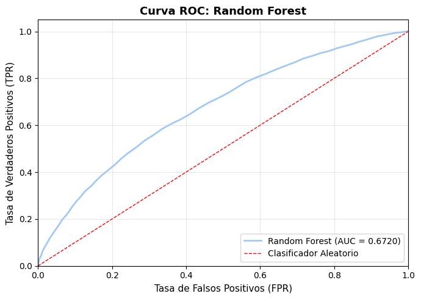
Interpretacion:
- El modelo es conservador: prioriza precision sobre recall
- Predice readmision solo cuando tiene alta confianza
- F1-score moderado (0.5574) sugiere capacidad predictiva aceptable
- AUC moderado (0.6720): discriminacion limitada
{'Modelo': 'Random Forest',
'Accuracy': 0.6292,
'Precision': 0.6194,
'Recall': 0.5066,
'F1-score': 0.5574,
'AUC': np.float64(0.672),
'TN': 6040,
'FP': 2190,
'FN': 3471,
'TP': 3564}
4.9. XGBoost#
# XGBoost con tree_method='hist' (optimizado)
xgb_model = XGBClassifier(
eval_metric='logloss',
enable_categorical=False,
tree_method='hist',
n_estimators=100,
n_jobs=-1,
random_state=42
)
evaluar_modelo_completo("XGBoost", xgb_model, X_train_array, y_train, X_test_array, y_test)
================================================================================
EVALUANDO: XGBoost
================================================================================
Entrenando modelo...
Modelo entrenado correctamente
Metricas calculadas:
Accuracy: 0.6341
Precision: 0.6229
Recall: 0.5224
F1-score: 0.5682
AUC: 0.6787
Matriz de Confusion:
TN=6005 FP=2225
FN=3360 TP=3675
Modelo entrenado correctamente
Metricas calculadas:
Accuracy: 0.6341
Precision: 0.6229
Recall: 0.5224
F1-score: 0.5682
AUC: 0.6787
Matriz de Confusion:
TN=6005 FP=2225
FN=3360 TP=3675
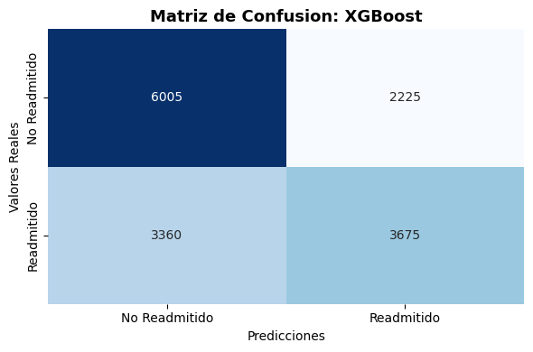
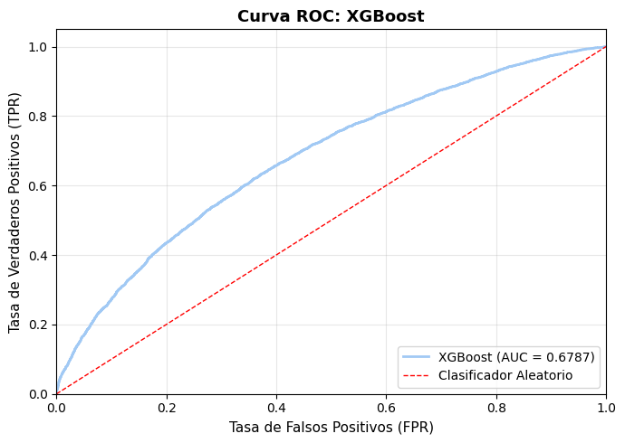
Interpretacion:
- El modelo es conservador: prioriza precision sobre recall
- Predice readmision solo cuando tiene alta confianza
- F1-score moderado (0.5682) sugiere capacidad predictiva aceptable
- AUC moderado (0.6787): discriminacion limitada
{'Modelo': 'XGBoost',
'Accuracy': 0.6341,
'Precision': 0.6229,
'Recall': 0.5224,
'F1-score': 0.5682,
'AUC': np.float64(0.6787),
'TN': 6005,
'FP': 2225,
'FN': 3360,
'TP': 3675}
4.10. SVM Lineal#
# SVM Lineal (LinearSVC optimizado)
svm_model = LinearSVC(random_state=42, dual='auto', max_iter=1000)
evaluar_modelo_completo("SVM Lineal", svm_model, X_train_array, y_train, X_test_array, y_test)
================================================================================
EVALUANDO: SVM Lineal
================================================================================
Entrenando modelo...
Modelo entrenado correctamente
Metricas calculadas:
Accuracy: 0.6290
Precision: 0.6444
Recall: 0.4351
F1-score: 0.5195
AUC: 0.6732
Matriz de Confusion:
TN=6541 FP=1689
FN=3974 TP=3061
Modelo entrenado correctamente
Metricas calculadas:
Accuracy: 0.6290
Precision: 0.6444
Recall: 0.4351
F1-score: 0.5195
AUC: 0.6732
Matriz de Confusion:
TN=6541 FP=1689
FN=3974 TP=3061
Interpretacion:
- El modelo es conservador: prioriza precision sobre recall
- Predice readmision solo cuando tiene alta confianza
- F1-score moderado (0.5195) sugiere capacidad predictiva aceptable
- AUC moderado (0.6732): discriminacion limitada
{'Modelo': 'SVM Lineal',
'Accuracy': 0.629,
'Precision': 0.6444,
'Recall': 0.4351,
'F1-score': 0.5195,
'AUC': np.float64(0.6732),
'TN': 6541,
'FP': 1689,
'FN': 3974,
'TP': 3061}
Tabla Resumen de Metricas#
A continuacion presentamos la tabla consolidada con todas las metricas de evaluacion.
# =========================================
# 5. Tabla resumen de metricas
# =========================================
# Crear DataFrame con todos los resultados
df_metricas = pd.DataFrame(resultados_evaluacion)
print("\n" + "="*100)
print(" "*30 + "TABLA DE METRICAS - CLASIFICACION")
print("="*100 + "\n")
# Mostrar tabla ordenada por F1-score
df_display = df_metricas[['Modelo', 'Accuracy', 'Precision', 'Recall', 'F1-score', 'AUC']].copy()
df_display = df_display.sort_values(by='F1-score', ascending=False)
pd.set_option('display.max_columns', None)
pd.set_option('display.width', None)
pd.set_option('display.precision', 4)
print(df_display.to_string(index=False))
print("\n" + "="*100)
# Guardar resultados
df_metricas.to_csv('../data/processed/evaluacion_metricas.csv', index=False)
print("\nResultados guardados en '../data/processed/evaluacion_metricas.csv'")
====================================================================================================
TABLA DE METRICAS - CLASIFICACION
====================================================================================================
Modelo Accuracy Precision Recall F1-score AUC
XGBoost 0.6341 0.6229 0.5224 0.5682 0.6787
Random Forest 0.6292 0.6194 0.5066 0.5574 0.6720
Arbol Decision 0.6203 0.6204 0.4537 0.5241 0.6557
LogReg L1 0.6297 0.6429 0.4422 0.5240 0.6740
LogReg L2 0.6298 0.6431 0.4421 0.5240 0.6740
Lasso 0.6298 0.6432 0.4418 0.5238 0.6740
SVM Lineal 0.6290 0.6444 0.4351 0.5195 0.6732
Ridge 0.6271 0.6403 0.4357 0.5185 0.6714
Naive Bayes 0.6012 0.5906 0.4388 0.5035 0.6255
KNN 0.5585 0.5237 0.4631 0.4916 0.5730
====================================================================================================
Resultados guardados en 'data/processed/evaluacion_metricas.csv'
Comparacion Visual de Metricas#
Visualizamos las metricas clave para facilitar la comparacion entre modelos.
# =========================================
# 6. Visualizacion comparativa de metricas
# =========================================
fig, axes = plt.subplots(2, 2, figsize=(15, 10))
# Ordenar por F1-score para todas las visualizaciones
df_sorted = df_metricas.sort_values(by='F1-score', ascending=True)
# 1. Accuracy
axes[0, 0].barh(df_sorted['Modelo'], df_sorted['Accuracy'], color='steelblue')
axes[0, 0].set_xlabel('Accuracy', fontsize=11)
axes[0, 0].set_title('Accuracy por Modelo', fontsize=13, fontweight='bold')
axes[0, 0].set_xlim([0, 1])
axes[0, 0].grid(axis='x', alpha=0.3)
# 2. Precision
axes[0, 1].barh(df_sorted['Modelo'], df_sorted['Precision'], color='coral')
axes[0, 1].set_xlabel('Precision', fontsize=11)
axes[0, 1].set_title('Precision por Modelo', fontsize=13, fontweight='bold')
axes[0, 1].set_xlim([0, 1])
axes[0, 1].grid(axis='x', alpha=0.3)
# 3. Recall
axes[1, 0].barh(df_sorted['Modelo'], df_sorted['Recall'], color='mediumseagreen')
axes[1, 0].set_xlabel('Recall', fontsize=11)
axes[1, 0].set_title('Recall por Modelo', fontsize=13, fontweight='bold')
axes[1, 0].set_xlim([0, 1])
axes[1, 0].grid(axis='x', alpha=0.3)
# 4. F1-score
axes[1, 1].barh(df_sorted['Modelo'], df_sorted['F1-score'], color='plum')
axes[1, 1].set_xlabel('F1-score', fontsize=11)
axes[1, 1].set_title('F1-score por Modelo', fontsize=13, fontweight='bold')
axes[1, 1].set_xlim([0, 1])
axes[1, 1].grid(axis='x', alpha=0.3)
plt.tight_layout()
plt.show()
print("Visualizacion completada")
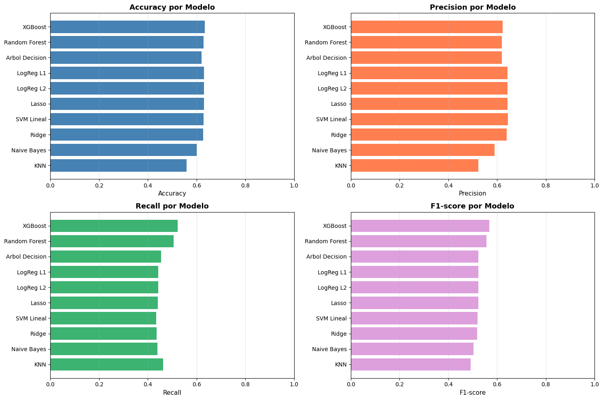
Visualizacion completada
Justificacion de la Metrica Principal#
Análisis de Métricas de Evaluación#
Para seleccionar la métrica más adecuada, nuestro equipo ha evaluado las siguientes opciones:
Accuracy (Exactitud):
Definición: Mide el porcentaje total de predicciones correctas.
Limitación: Puede ser una métrica engañosa en conjuntos de datos con desbalance de clases, como es nuestro caso, donde el número de pacientes no readmitidos es significativamente mayor. Por esta razón, no la consideramos una métrica principal.
Precision (Precisión):
Definición: De los pacientes que nuestro modelo predice como “readmitidos”, ¿qué porcentaje realmente lo fue? (
TP / (TP + FP)).Relevancia: Es crucial cuando el coste de los falsos positivos es alto. Una alta precisión significa que nuestras alertas de riesgo son fiables, minimizando intervenciones innecesarias en pacientes que no lo necesitan.
Recall (Sensibilidad):
Definición: De todos los pacientes que realmente fueron readmitidos, ¿qué porcentaje fuimos capaces de identificar? (
TP / (TP + FN)).Relevancia: Es fundamental cuando el coste de los falsos negativos es alto. Un alto recall asegura que detectamos a la mayoría de los pacientes en riesgo, lo que permite aplicar intervenciones preventivas de manera efectiva.
F1-Score:
Definición: Es la media armónica entre Precision y Recall (
2 * (Precision * Recall) / (Precision + Recall)).Relevancia: Es ideal para escenarios donde se necesita un equilibrio entre minimizar falsos positivos (Precision) y minimizar falsos negativos (Recall). Dado nuestro contexto clínico, este balance es exactamente lo que buscamos.
AUC (Área Bajo la Curva ROC):
Definición: Mide la capacidad general del modelo para discriminar entre la clase positiva y la negativa, independientemente del umbral de clasificación.
Relevancia: Es muy útil para comparar el poder discriminatorio intrínseco de diferentes modelos.
Métrica Principal Seleccionada: F1-Score#
Tras un análisis detallado, el equipo ha seleccionado el F1-Score como la métrica principal para la optimización y selección del modelo final.
Justificación:
Equilibrio entre Consecuencias Clínicas: En el ámbito médico, tanto los falsos positivos como los falsos negativos tienen implicaciones significativas.
Falsos Negativos (Bajo Recall): No identificar a un paciente que será readmitido implica perder una oportunidad crítica de intervención preventiva.
Falsos Positivos (Baja Precisión): Alertar innecesariamente sobre un paciente implica un uso ineficiente de recursos y puede generar preocupación innecesaria.
El F1-Score penaliza a los modelos que se decantan excesivamente por uno de estos extremos, promoviendo un equilibrio pragmático.
Robustez ante el Desbalance de Clases: A diferencia del Accuracy, el F1-Score es una métrica mucho más informativa en datasets desbalanceados, ya que se centra exclusivamente en el rendimiento sobre la clase minoritaria (pacientes readmitidos), que es la de mayor interés.
Interpretabilidad y Comparabilidad: Un F1-Score alto indica que el modelo es eficaz tanto en la identificación de casos positivos como en la fiabilidad de sus predicciones. Esto facilita la comparación directa y justa entre diferentes arquitecturas de modelos.
Métricas Secundarias#
Aunque el F1-Score es nuestra guía principal, complementamos nuestra evaluación con:
AUC: para medir la capacidad de discriminación general.
Recall: para asegurar que nuestra tasa de detección de pacientes en riesgo es aceptable.
Precision: para controlar el volumen de falsas alarmas.
Conclusión de la Evaluación#
Utilizamos el F1-Score como el criterio primario para la selección del modelo, mientras que el análisis de AUC, Recall y Precision nos proporciona una visión integral de su comportamiento, asegurando que el modelo seleccionado no solo es estadísticamente robusto, sino también clínicamente útil.
Resultados del Mejor Modelo Seleccionado#
Tras la fase de experimentación y optimización, el modelo que ha demostrado el mejor rendimiento según nuestra métrica principal es:
Modelo: XGBoost
F1-Score:
0.5682Precision:
0.6229Recall:
0.5224AUC:
0.6787